Disaster and climate-risk researcher · Dhaka, Bangladesh
Nowreen
Tasnim.
Turning risk evidence into inclusive anticipatory finance and early-warning solutions in Bangladesh.
My work connects lived risk, institutional practice and spatial evidence to questions of when, where and for whom resilience finance should work.
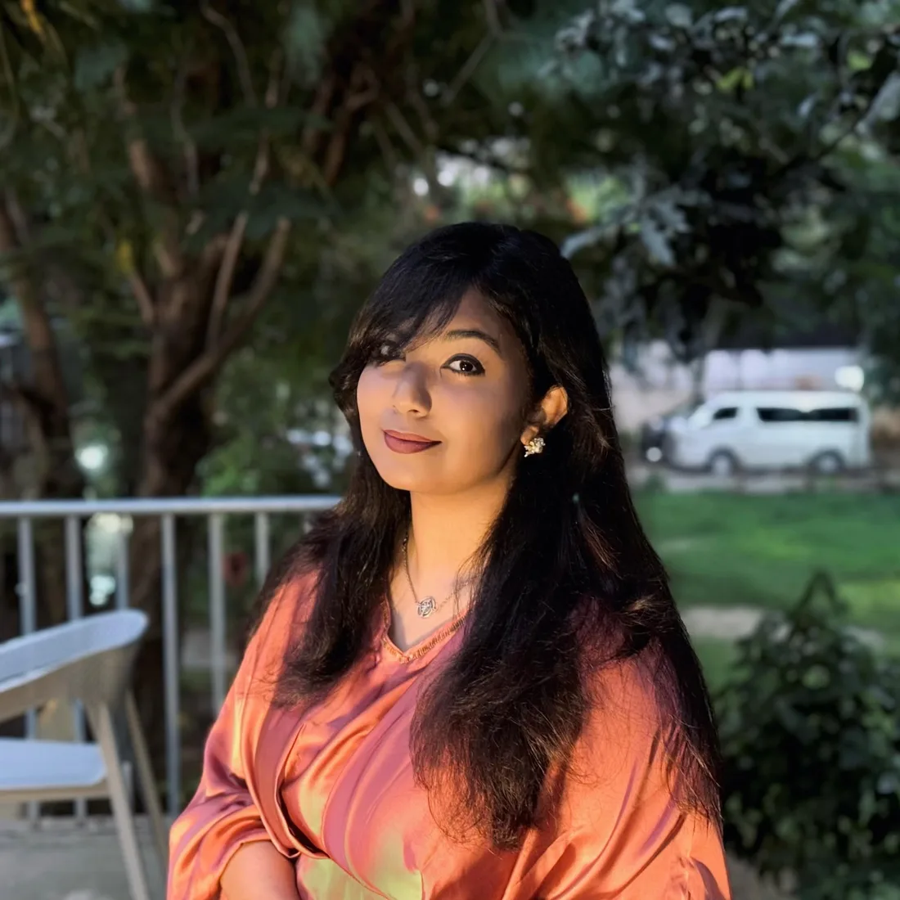
NT / 26Risk × time × systems
Adaptation financeField evidence
Decision systems
University of Dhaka
+ sole-authored report
Bangkok, 2026
Academic formation
Education.
Training in disaster management, paired with applied research on risk, finance and resilience in Bangladesh.
2025–2026 · Thesis submitted
Master of Disaster Management
University of Dhaka
First-semester GPA: 3.96/4.00; ranked first. Thesis: Designing Risk-Informed Anticipatory Financing for Riverine Flood Resilience in Kurigram, Bangladesh. Requirements completed; final result expected December 2026. Selected for oral presentation at ICCDRM 2026.
2021–2024
Bachelor of Disaster Management
University of Dhaka
CGPA: 3.88/4.00; first in cohort. Awarded the Merit Scholarship.
Research direction
Risk, systems
and resilience.
How interacting hazards affect infrastructure networks, ecosystems and livelihoods, and how risk evidence can guide inclusive financing and adaptation priorities.
Experience
Research into practice.
A selective chronology of field research, institutional analysis, finance design and specialist training.
Policy
Project Assistant
Centre for Disability in Development
Inclusive multi-hazard early-warning guidance, operational tools, accessible infographics and training materials.
Finance
Project Associate
UNDP–SMEF Blended Finance Project
Enterprise selection, credit-scoring tools, programme frameworks and curricula for climate-vulnerable enterprises.
Finance
Trainee Consultant, Ecosystem and Investments
LightCastle Partners
Investment analysis and due diligence across blended finance, catalytic capital and climate-risk finance.
Research
Research contribution
Gender Equality and Social Inclusion Assessment
Field evidence and mixed-methods synthesis for the National Plan for Disaster Management 2026–2030 assessment.
Policy
Intern, Research and Training Wing
Department of Disaster Management
Institutional analysis of local disaster governance and policy implementation in Cox’s Bazar.
Research
Research Assistant and Documentation Officer
Centre for Disability in Development
Qualitative evidence on warning-access barriers for persons with disabilities in Southkhali, Bagerhat.
Research
Research Assistant
Bangladesh Preparedness Partnership / ADPC
Assessment of disaster-policy implementation and Disaster Management Committee functionality across three districts.
Research
Research Assistant
Bangladesh Disaster Preparedness Centre
Research on disability, gender and age inclusion in disaster-risk reduction and climate-adaptation programmes.
Policy
Youth Fellow
International Centre for Climate Change and Development
Field research, workshops and advocacy on gendered vulnerability, youth participation and inclusive adaptation.
Training
Selected participant
EMP-APAC NISMOD Climate Resilience Track
Applied spatial flood-risk analysis and infrastructure-systems modelling at the UN Conference Centre, Bangkok.
Training
Specialist training
Business Continuity Management for Disaster Preparedness
Business-impact analysis, risk assessment, scenario exercises and continuity planning.
Training
Short course
Climate Risk Insurance
Field research and climate-risk insurance product-concept design in Sirajganj.
International programme · Bangkok 2026
EMP-APAC
NISMOD Climate Resilience Track.
At the UN Conference Centre in Bangkok, I applied infrastructure-systems modelling and spatial flood-risk analysis to prioritise resilient road investment in Rajshahi and Rangpur, and developed and presented the sole-authored report listed above.
Selected programme stakeholders
University of Oxford · University of Cambridge–Centre for Global Equality · Imperial College London · Climate Compatible Growth · UN ESCAP · Asian Development Bank · World Bank Group, among others.Programme context only; these are not personal affiliations or employers.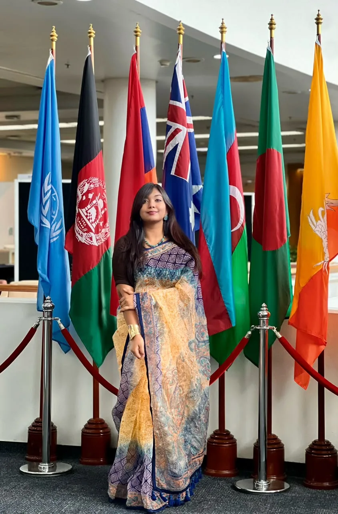
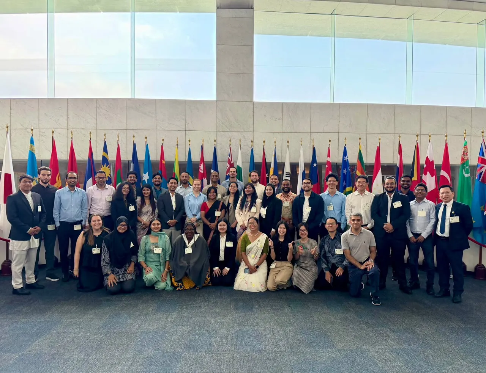
Research in context
Evidence, dialogue, delivery.
A selective visual record of field enquiry, professional communication and youth climate education.
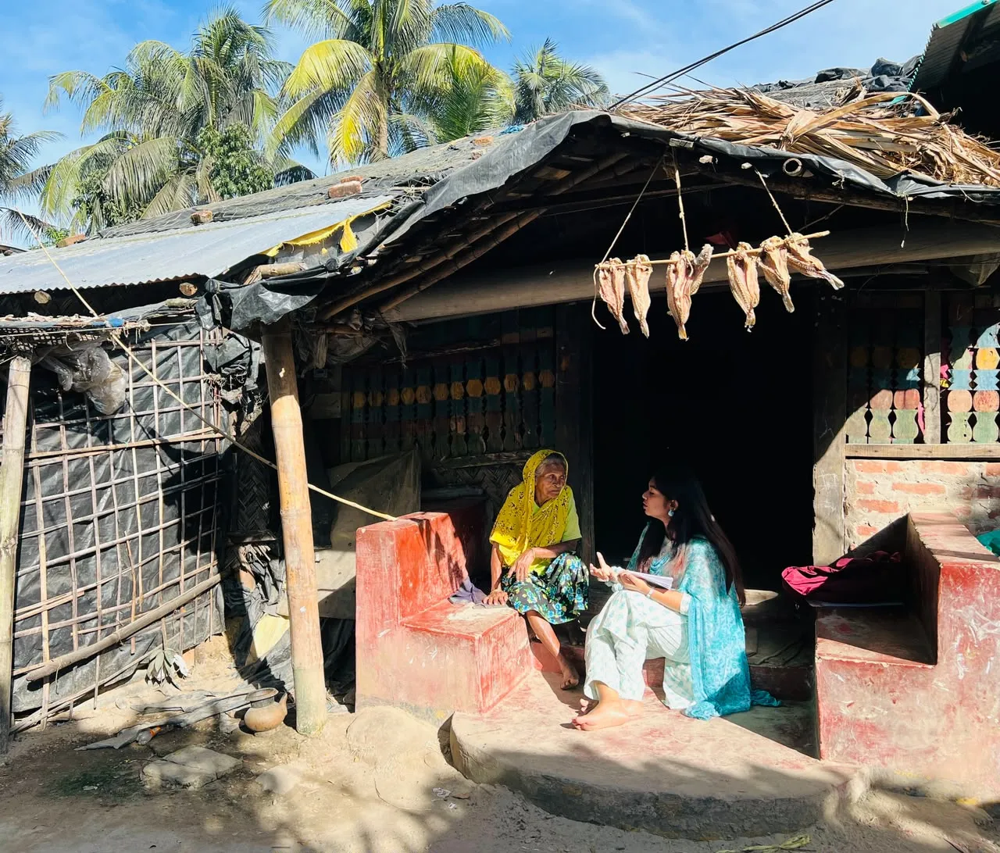
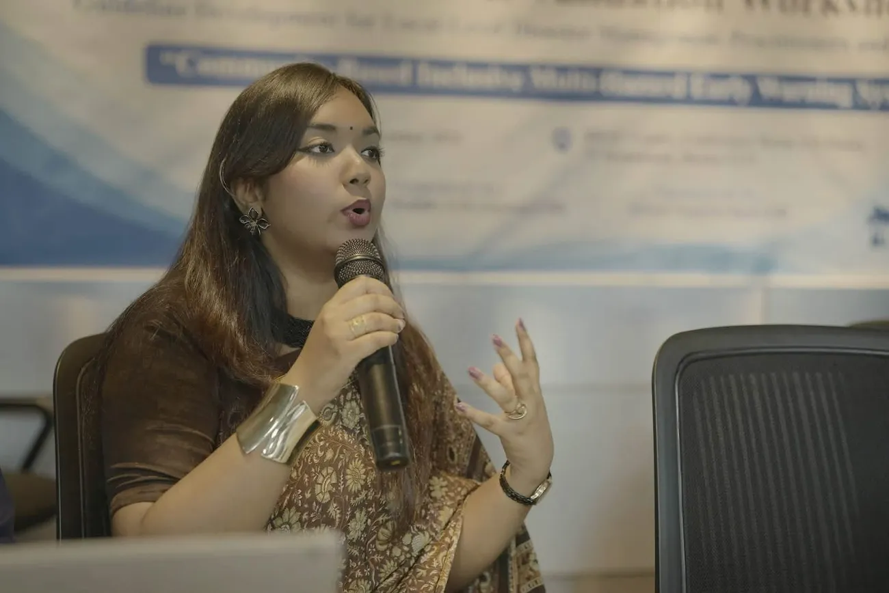
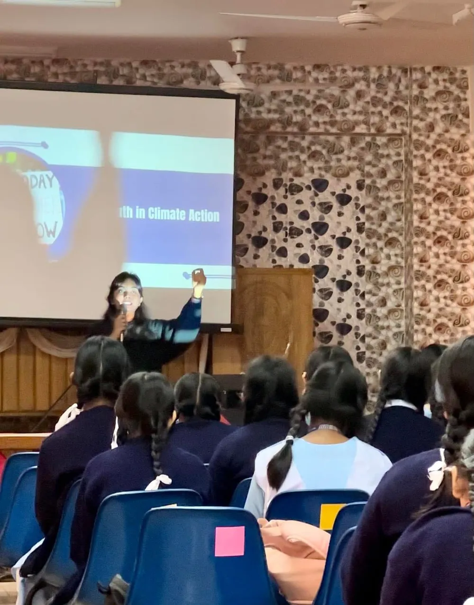
Methods and capabilities
A practical research toolkit.
Capabilities are presented by use, with Python accurately retained at a basic level.
GIS and infrastructure analysis
Hazard–exposure–vulnerability mapping, spatial data management and applied infrastructure-risk screening.
ArcGIS · QGIS · Python (basic)
Survey and observational analysis
Survey design, cleaning, descriptive statistics and adjusted observational analysis.
SPSS · Stata · Excel · KoboToolbox · MySQL
Qualitative and institutional evidence
Interviews, focus groups, field observation, case stories, coding, synthesis and inclusion-sensitive policy analysis.
NVivo · KIIs · IDIs · FGDs · Policy analysis
Resilience-finance design
Anticipatory financing, blended-finance design, enterprise selection, credit-scoring tools, due diligence and training curricula.
Programme frameworks · Consultations · Technical writing
Beyond the research
Bridging imagination with innovation.
AROHON and Renaissance 21 use visual storytelling to make climate questions accessible to young people.
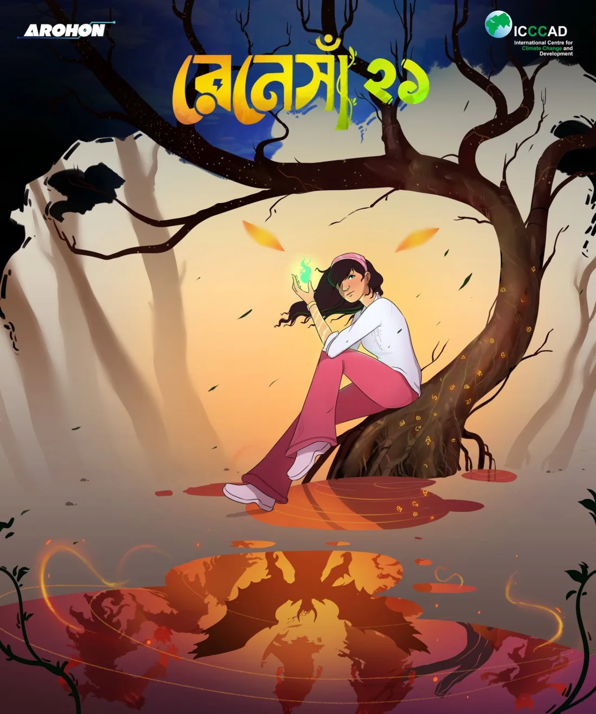
The Rise of the Climate Warriors
Original project artwork supplied by Nowreen Tasnim.
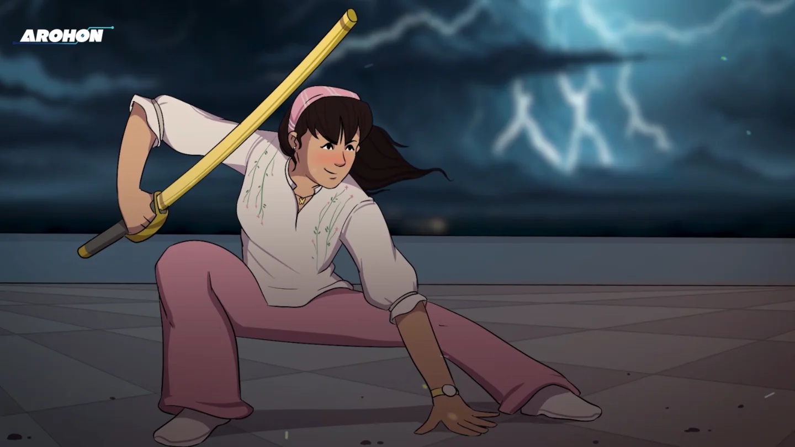
Renaissance 21 clip
Founder and Director · AROHON
Climate education through story.
I founded AROHON and created Renaissance 21, a climate-hero anime initiative in Bangladesh. AROHON’s reported reach exceeds 2,000 students through interactive climate-education workshops and debates.
21
2023 Youth Innovation Grant · Best ProjectICCCAD · Independent University, Bangladesh · Embassy of Sweden
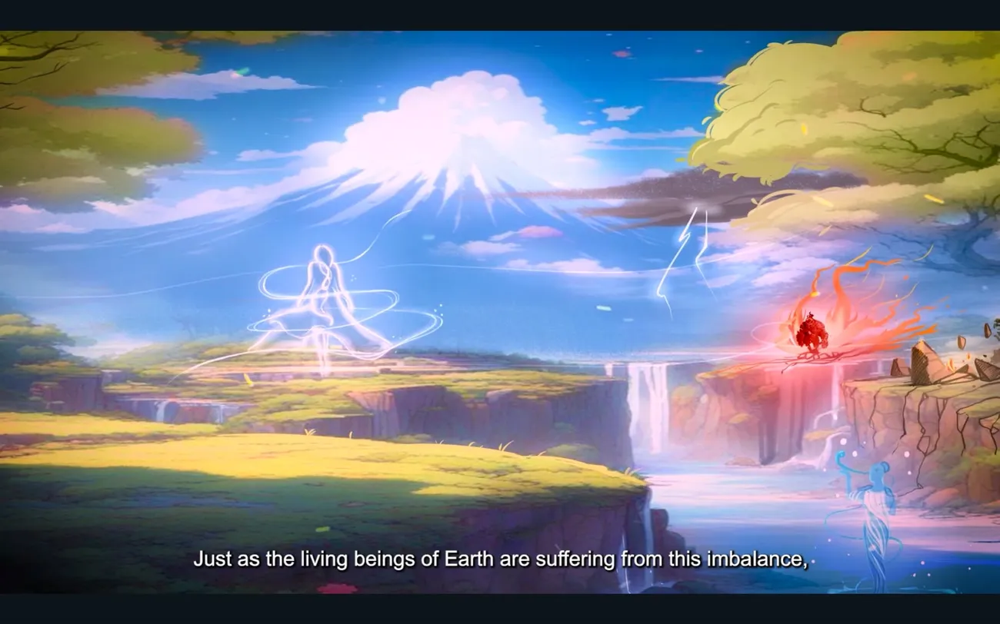
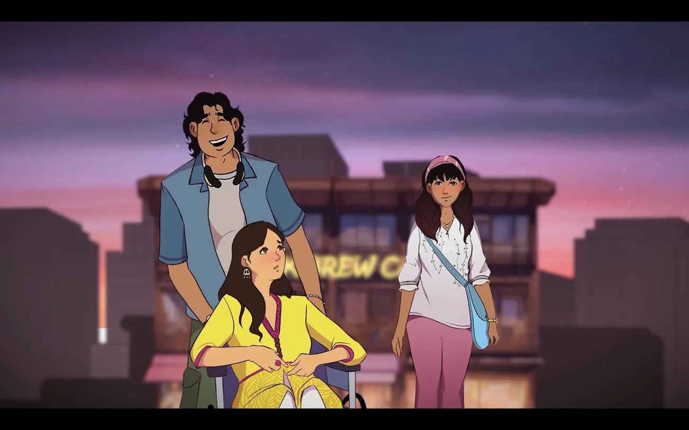
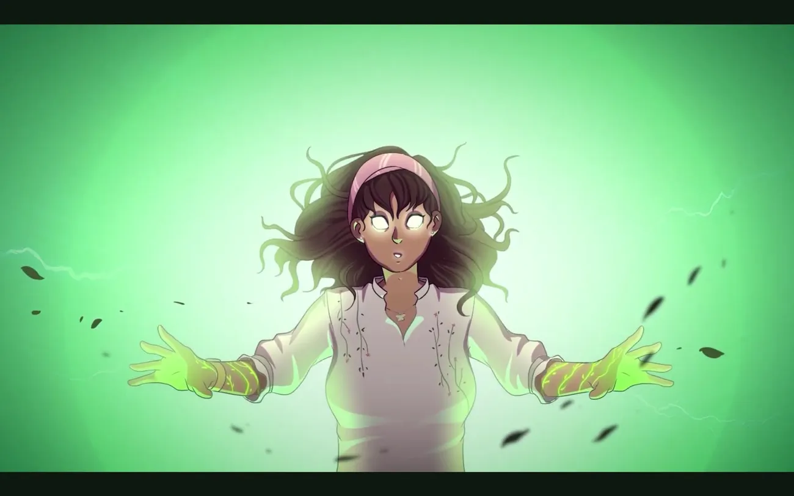
Selected original stills from Renaissance 21: The Rise of the Climate Warriors. Creative work is presented separately from the academic research portfolio.
Writing and public scholarship
Ideas beyond the journal page.
Public commentary on climate finance, displacement and youth-led resilience, with space for selected creative work.
LightCastle Partners · 2026
Forecast-Based Financing: Bangladesh’s Economic Advantage
A public-facing perspective on the economic case for financing preparedness before disasters occur in Bangladesh.
↗ Dhaka Tribune · 7 January 2026Climate finance without the displaced: The most dangerous blind spot in global climate justice
A commentary on displacement, representation and the people climate-finance decisions must account for.
↗ Climate Tribune · August 2023Rays of Resilience: The Remarkable Journey of Urban Youth Tackling Heatwaves Head-On
Writing on young people’s engagement with urban heat and climate resilience, published on pages 13–14 of Climate Tribune.
↗Recognition and leadership
Selected honours.
Academic recognition, public engagement and service that support the research profile.
Among the Top Teams
Team Aurora · NextGen Changemakers for Health, Ipas Bangladesh
Youth Innovation Grant · Best Project
ICCCAD, Independent University, Bangladesh, and the Embassy of Sweden
1st Runner-Up · BUP DMX 2.0
Bangladesh University of Professionals
Merit Scholarship · First in cohort
Bachelor of Disaster Management, University of Dhaka
Research and Development Lead
IDMVS Students’ Forum, University of Dhaka
Founder and Director
AROHON — Adaptation and Resilience Outreach, Humanitarian Operations Network
Youth Fellow
International Centre for Climate Change and Development
Contact
The next
research question.
I welcome conversations with prospective supervisors and research collaborators working on climate risk, adaptation finance, infrastructure resilience and inclusive early warning.
nowreentasnim.17@gmail.comReferences available on request. Referee contact details and phone numbers are intentionally excluded from this public website.